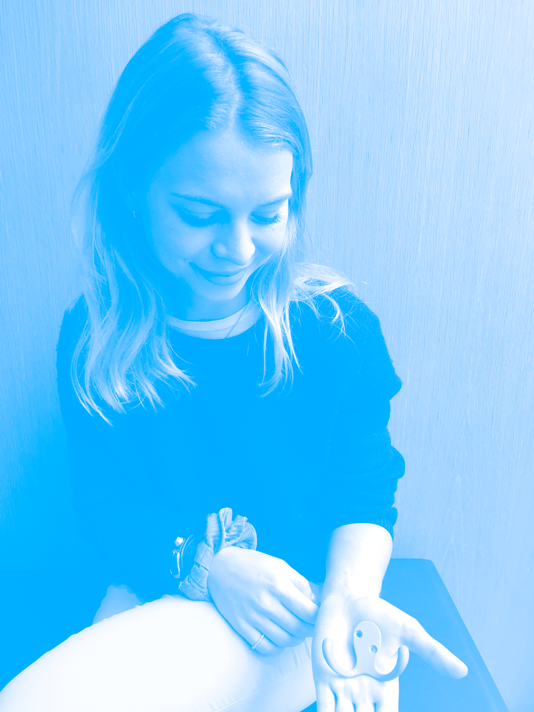
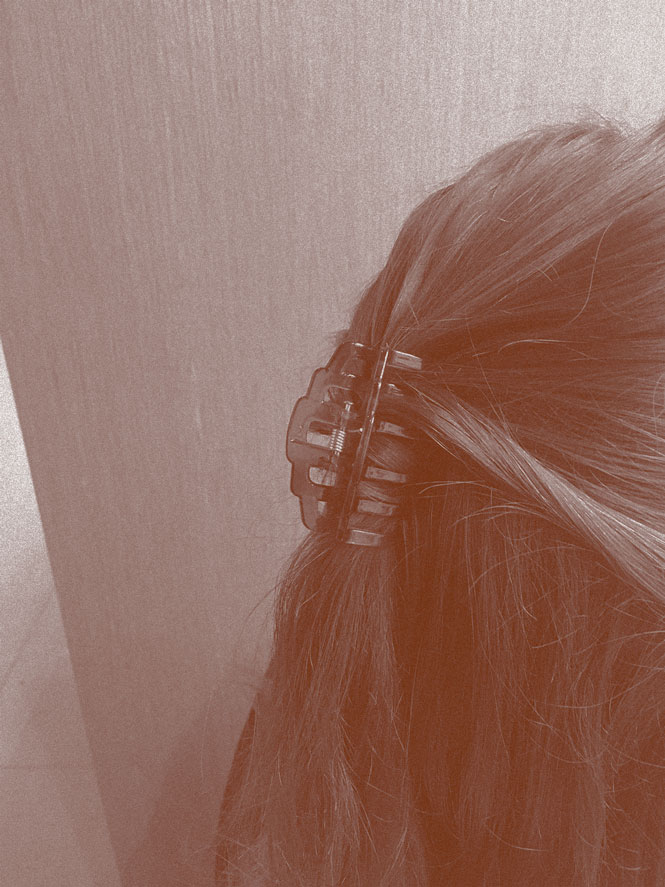

Sofie
I choose an octopus coathook, the size of the palm of my hand, sort of. Maybe a bit smaller. It’s slightly heavy, made of some kind of.. iron.. It’s a beautiful sky-blue colour. It has two hooks, sort of two octopus arms, and two crooked eyes.

I choose this because I’ve just moved apartments, and I could use a coathook. Then I saw it, and I thought it was both cute and also a little special. Not just a hook for a jumper, but it’s got something extra by being kind of quirky.
And it was so cheap too! I’ve seen a few designer homewares with similar octopus-hooks. But this one is a pretty good alternative.
[Renée] It’s funny because the eyes are crooked, and not like the ones where the screws sit parallel. It’s a bit cross-eyed… or a little confused.
[Sofie] Yes, actually really octopus-like. That’s pretty cool I think.
Things I considered:
I also had a look at some strawberry-flavoured straws, which were pretty cool. Quite unique. They’d be spot on for a pink birthday party! 💘
[Renée] Like a theme party?
[Sofie] Yes! I love them.
Then I considered some clear bags, like ziplock ones. They are just so versatile and can be used for heaps of things. Maybe more practical than strawberry-flavoured straws… They’re great when travelling too – for lotions and such.
I also saw a really pretty mortar and pestle. And it’s because I think that a mortar is such a lovely kitchen thing, but then, at the same time, one that you never use. But it looks great, and if someone has one in their kitchen, then I always get the impression that they cook great food, haha.
[Renée] So you’d like to give that impression, haha?
[Sofie] Yes, I’d love that 🤣

Renée
The object I choose is a hair piece. It’s brown.. [guided by Sofie] a sort of amber-brown. It has a spring to make it open and grab your hair, a hair clip I guess. It’s made of plastic, and is, maybe, a little smaller than a palm. It has six 'teeth' that sort of clutched a piece of cardboard as it’s packaging… if you can call it that…

I think the reason that I choose this is that it’s something I can use every day. And I also thought, that maybe, it sort of matches my hair colour. It’s slightly lighter, but I can picture it. It has a bit of sheen and a few different shades somehow.
[Sofie] It’s also a bit fashionable at the moment to use a hair clip?
Yes, you’re right. This one is really cheap though, compared to those popular $20 ones! Yeah, so I think it’s really cheap for an object, that I know I will use. It’s cheapness almost makes it more special.
I’m really happy with my hair clip.
Things I considered:
A beer pong set – because everyone knows that that is important to have 😉 But then I thought that I might not use it much. Maybe it's something you’d buy when you need it. But I do like beer, and I’m actually pretty good at beer pong, so I thought it was an OK option.
Then I had a look at some marzipan candy – which I love. But I wasn’t really in a candy-mood, maybe they are also more of a Christmas-thing. It’s not Christmas yet. Actually, it’s way too early.
The last thing was a packet of kitchen cloths with a heart pattern. They were my second choice. I don’t know… they were just really sweet, and I haven’t seen similar ones anywhere else. Usually, kitchen cloths are a bit of an ugly thing, but these were cute.